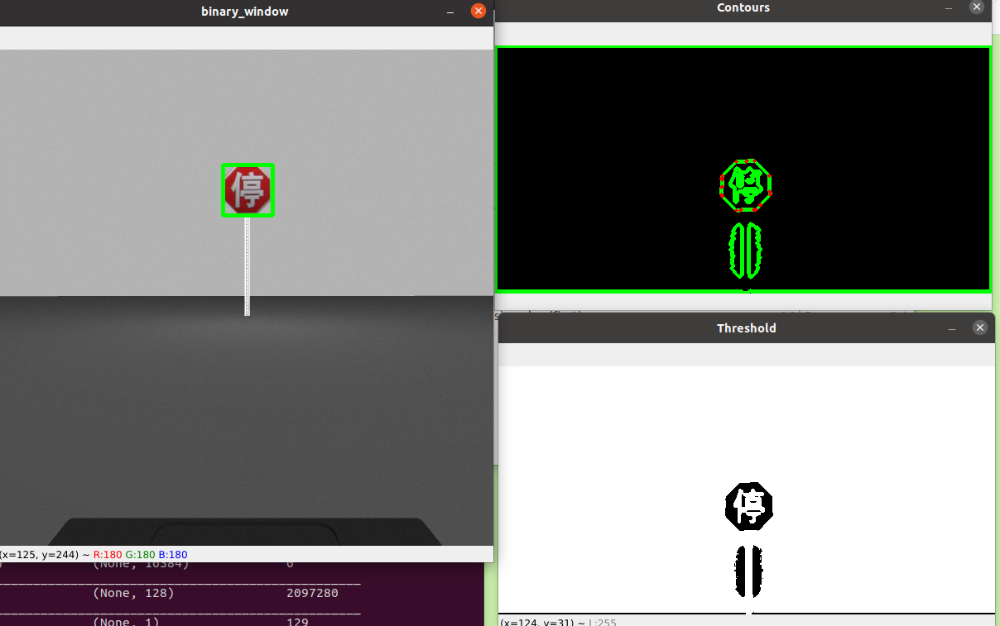

Project Story
Project Update 12/9/2020
In this phase of the project, we focused on improving our object localization and creating a data
pipeline to validate that we can get to our MVP. In moving towards the end of the project, we have
also layed out our class diagram as shown below.
Within the main class, Sign Recognition, there are instances of 3 other classes. The first one is
RobotMotion which manages the ROS nodes and commands related to movement. Next, ImageExtractor, manages
the subscription to the ROS camera/image_raw topic and uses CVbridge libary to be able to mannipulated
the video feed. ImageExtractor also uses thresholding, countours, and filtering to localize a region of
the video feed where a sign is believed to be. When a region in belived to contain a sign, it is saved
and then classified by the ConvNeuralNet class. This class uses an CNN trained in traffic sign data to
classify the region of interest (ROI) that was found and saved by the ImageExtractor class.
This is the data pipeline:
ROS image topic > OpenCV bridge > Thresholding > Contour > Filtering > Bouding Box >
ROI > shape detection CNN > Robot Motion
Object Localization
To find the region of the video where there is a suspect sign, we are using a combination of techniques suggested in the previous project updated and a few new components. To stop the simulated neato camera from trying to classify the front of the neato included in the camera view, the video is cropped to be the top 2/3rds of the video. Next the video is converted to grayscale and an adpative thershold in applied. Next we generate contours on the thresholded image. Out of the contoured area, we approxmate how many verties for each countor and the area of contoured shape. Shapes that are less than ~1000 pixels are written off as noise and Shapes larger than 20,000 pixels are discared as they are likely a bounding box being drawn around the whole rectangular camera area. Similiarly, countors with 4 vertices are ignored as we noticed perfect rectangles happening in the thresholding were the whole video stream perimeter being classified as a contour. Finally, contours that have more than 4 vertices and meet the area restrictions are sorted based of their estimated areas. Within the filtered contours, the region with the largest area is assumed to be the sign of intrests. This is becuase smaller areas are considered to be signs in the distance or the text of the signs. Below is an example of our object localization.
Gazebo Models
Since the last blog post, we successfully put an image from the traffic sign dataset onto the Gazebo stop sign model. It proved to be more difficult than we initially anticipated to make a new Gazebo model from scratch, so we ended up using Illustrator to edit the texture for the stop sign model so that it shows a Chinese stop sign. This is the sign we are using for our MVP.
To go above and beyond our MVP, we could continue using the stop sign model by editing the texture with the stop sign dataset speed limit signs. These dataset images are round, so it would be easy enough to use this similarly shaped model. Additionally, the speed limit signs are appropriate for next steps since we could make the Neato respond to speed limits.
Project Update 11/23/2020
Phase 1 of our project consisted of two major parts, object localization from video and creating a custom Gazebo world. We identified that we hadn't interfaced with these two topics before and that they were both critical parts of the project. In moving our sign recognition from static images to a realtime video stream, we needed to begin developing object localization from a video and understanding the challenge there. Creating a custom Gazebo world is needed so that our simulated Gazebo has road signs from our chosen data set that it can respond to. To tackle these challenges, we took an asynchronous approach and you can read more about the progress in phase 1 below.
Object Localization - Abby
To get experience quickly with different object localization strategies, I started by using my computer's webcam and experimenting with different methods that came up during my research. Many implementations and papers on the topic of real-time video processing are focused on object-detection. However, for our project, we want to use the simple CNN we developed during the computer vision project so that we only want to localize the object and then feed that localized image into a classifier. To determine if an object in the simulated world is a road sign or part of the gazebo simulated world we may need to use a variety of different features.
- Color: This is one of the simpler methods I found. It involves applying a mask to the live video that narrows the range of colors in the processed video. For applications where the object being detected are all the same color and are differently colored than the background, this seems like a good option. Though our gazebo simulation will likely be mostly gray and our signs brightly colored, we don't want to rely on the color mask as this solution doesn't have very much viability in real-world applications.
- Size: In our simulated world, we perceive that it may be necessary to distinguish between a road sign immediately coming up and one down the road. Distinguishing the area of the sign-like object maybe a good way to distinguish between two signs at different distances on the same stretch of road. At this point, it is unclear how populated our gazebo world will be and there may be many objects the same size at the road signs that the neato may try to localize to. This method is a viable candidate but has some limitation to how complex of a world it can navigate.
- Approximated Shape: The road signs in our chosen dataset are all triangles, rectangles, and circles which makes our dataset a good candidate for using shape detection. However, similar to the size-dependent implementation, there complexity of shapes in the world around the neato may cause it to localize to objects other than the road sign.
 *Fig. 1: Here is an example of shape detection were only simplified rectangles with areas greater
than 50 pixels are being identified. The value next to each bounding box is the approximated area of
the rectangle. The post-it is frequently bnot eing detected as an independt rectangle but rather with
other objects in the frame.
*Fig. 1: Here is an example of shape detection were only simplified rectangles with areas greater
than 50 pixels are being identified. The value next to each bounding box is the approximated area of
the rectangle. The post-it is frequently bnot eing detected as an independt rectangle but rather with
other objects in the frame.
In addition to continuing to implement object localization algorithms, I would also like to implement some speed improvements to the localization. A strategy like skipping to every nth frame seems like a simple and effective optimization but I plan on looking into other strategies as well.
Custom Gazebo World - Vienna
I have been working on creating custom road sign models for our Gazebo world. The ultimate
goal is to make a Gazebo world with at least two types of signs based on the Chinese Road Sign
dataset that the Neato can recognize and respond to using the CNN image classifier from our
Computer Vision project.
I made a model in Solidworks based on a triangular yellow sign and exported it using the
URDF exporter Solidworks add-on. I found that this only exports the mesh as .STL files without
the image overlay, so I am currently trying to figure out how to use diffuse and spec images
to add the image to the URDF model.
Here is the model in SolidWorks:
Some ideas/concerns I've been considering:
- How does image brightness impact the accuracy of the CNN? How does this impact the lighting I program into each model?
- Can the Neato zone in on one sign in its field of vision to respond to? This is what Abbys working on with OpenCV, and for now we are optimistic that the Neato will be able to at least pick the closest (and therefore largest) sign in sight.